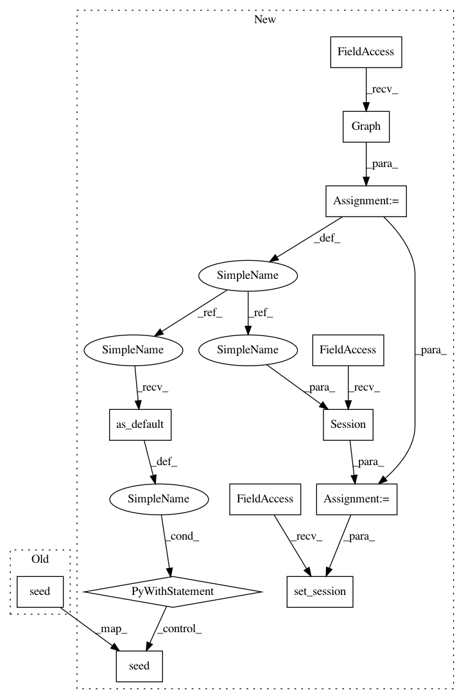

785ac0b6d0383e6ab46b9ad0f8ebb5cb1eddd3e2,deepchem/models/tests/test_overfit.py,TestOverfitAPI,test_keras_multitask_classification_overfit,#TestOverfitAPI#,578
Before Change
n_features = 3
// Generate dummy dataset
np.random.seed(123)
ids = np.arange(n_samples)
X = np.random.rand(n_samples, n_features)
y = np.random.randint(2, size=(n_samples, n_tasks))
w = np.ones((n_samples, n_tasks))
After Change
def test_keras_multitask_classification_overfit(self):
Test keras multitask overfits tiny data.
////////////////////////////////////////////////////////////////////////////////////////////////////////////////////////// DEBUG
g = tf.Graph()
sess = tf.Session(graph=g)
K.set_session(sess)
with g.as_default():
////////////////////////////////////////////////////////////////////////////////////////////////////////////////////////// DEBUG
n_tasks = 10
tasks = ["task%d" % task for task in range(n_tasks)]
task_types = {task: "classification" for task in tasks}
n_samples = 10
n_features = 3
// Generate dummy dataset
np.random.seed(123)
ids = np.arange(n_samples)
X = np.random.rand(n_samples, n_features)
y = np.random.randint(2, size=(n_samples, n_tasks))
w = np.ones((n_samples, n_tasks))
dataset = Dataset.from_numpy(self.train_dir, X, y, w, ids, tasks)
model_params = {
"nb_hidden": 1000,
"activation": "relu",
"dropout": .0,
"learning_rate": .15,
"momentum": .9,
"nesterov": False,
"decay": 1e-4,
"batch_size": n_samples,
"nb_epoch": 200,
"init": "glorot_uniform",
"nb_layers": 1,
"batchnorm": False,
"data_shape": dataset.get_data_shape()
}
verbosity = "high"
classification_metric = Metric(metrics.roc_auc_score, verbosity=verbosity)
model = MultiTaskDNN(tasks, task_types, model_params, self.model_dir,
verbosity=verbosity)
// Fit trained model
model.fit(dataset)
model.save()
// Eval model on train
transformers = []
evaluator = Evaluator(model, dataset, transformers, verbosity=verbosity)
scores = evaluator.compute_model_performance([classification_metric])
assert scores[classification_metric.name] > .9
def test_tf_multitask_classification_overfit(self):
Test tf multitask overfits tiny data.
n_tasks = 10
tasks = ["task%d" % task for task in range(n_tasks)]
In pattern: SUPERPATTERN
Frequency: 6
Non-data size: 12
Instances
Project Name: deepchem/deepchem
Commit Name: 785ac0b6d0383e6ab46b9ad0f8ebb5cb1eddd3e2
Time: 2016-09-06
Author: bharath.ramsundar@gmail.com
File Name: deepchem/models/tests/test_overfit.py
Class Name: TestOverfitAPI
Method Name: test_keras_multitask_classification_overfit
Project Name: deepchem/deepchem
Commit Name: 785ac0b6d0383e6ab46b9ad0f8ebb5cb1eddd3e2
Time: 2016-09-06
Author: bharath.ramsundar@gmail.com
File Name: deepchem/models/tests/test_overfit.py
Class Name: TestOverfitAPI
Method Name: test_keras_regression_overfit
Project Name: deepchem/deepchem
Commit Name: 785ac0b6d0383e6ab46b9ad0f8ebb5cb1eddd3e2
Time: 2016-09-06
Author: bharath.ramsundar@gmail.com
File Name: deepchem/models/tests/test_reload.py
Class Name: TestModelReload
Method Name: test_keras_reload
Project Name: deepchem/deepchem
Commit Name: 785ac0b6d0383e6ab46b9ad0f8ebb5cb1eddd3e2
Time: 2016-09-06
Author: bharath.ramsundar@gmail.com
File Name: deepchem/models/tests/test_overfit.py
Class Name: TestOverfitAPI
Method Name: test_keras_skewed_classification_overfit
Project Name: deepchem/deepchem
Commit Name: 785ac0b6d0383e6ab46b9ad0f8ebb5cb1eddd3e2
Time: 2016-09-06
Author: bharath.ramsundar@gmail.com
File Name: deepchem/models/tests/test_overfit.py
Class Name: TestOverfitAPI
Method Name: test_keras_classification_overfit
Project Name: deepchem/deepchem
Commit Name: 785ac0b6d0383e6ab46b9ad0f8ebb5cb1eddd3e2
Time: 2016-09-06
Author: bharath.ramsundar@gmail.com
File Name: deepchem/models/tests/test_overfit.py
Class Name: TestOverfitAPI
Method Name: test_keras_multitask_regression_overfit